Kante 1.23 to 1.27
The practice components Kontra (the bass trainer) needs, added to Kante first. QML only, purely presentational. Colour is never the only sign: every note state has a shape, every toggle a lamp, every zone a word. Screenshots from qml under Xvfb (Qt 6.10, Kirigami 6.30, Fusion controls, no icon theme); Kante Light shows Kirigami's default colours.
KanteTabLane
Note highway: one lane per string, fret number on the head, tail as long as the note. Hit filled + check, wrong + cross, missed hollow and dashed, early / late + arrow. Loop range with bracket edges. Below: five strings, low string on top.
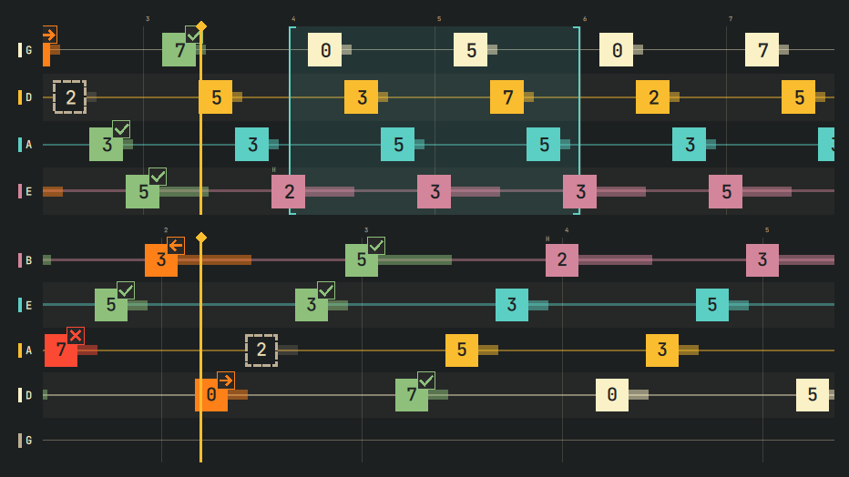
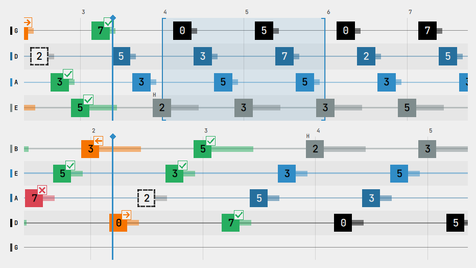
KanteTabStaff
Classic tablature with repeat signs, rhythm below the staff (beams within a beat, flags, dots), a chord, the current note on a band and the cursor. Pages line by line.
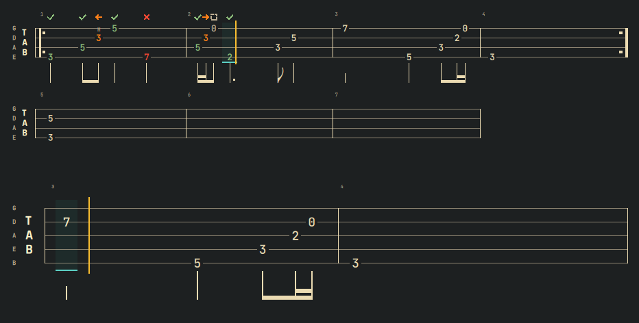
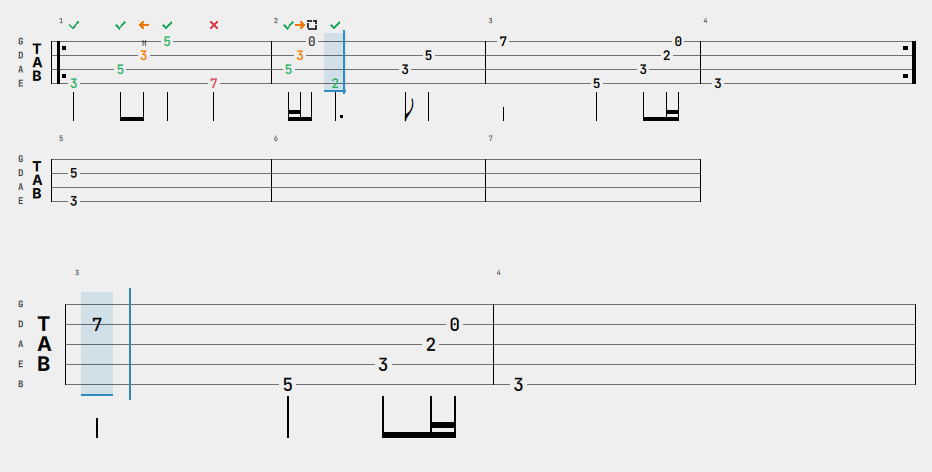
KanteBassStaff
Bass clef with Bravura glyphs: key signatures (D major, E flat major), accidentals that hold to the bar line, ledger lines, stems by position, beams, ties, triplet, rests.
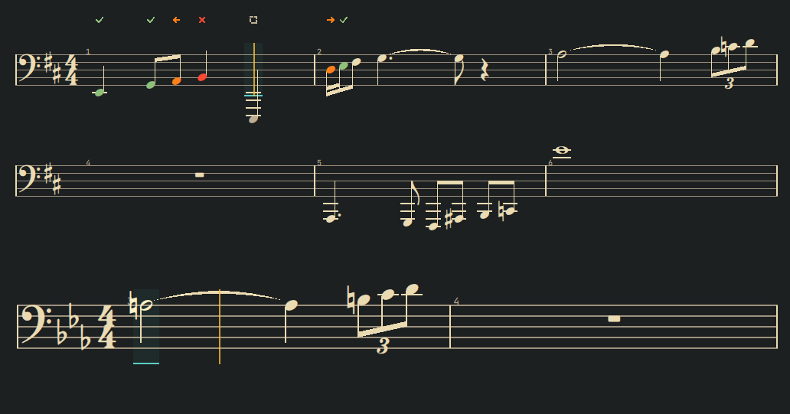
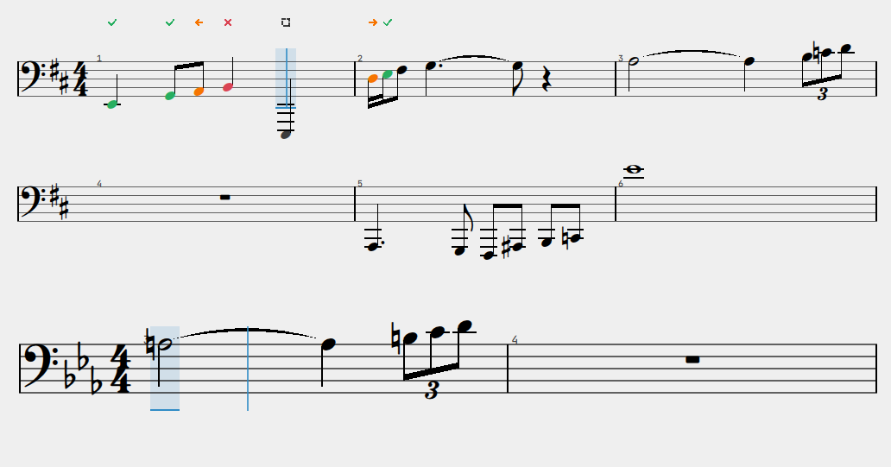
KanteFretboard
Roles by shape: current filled square, next hollow square, root diamond, scale dot. Below: a left-handed position (frets 5 to 9), five strings, even frets.
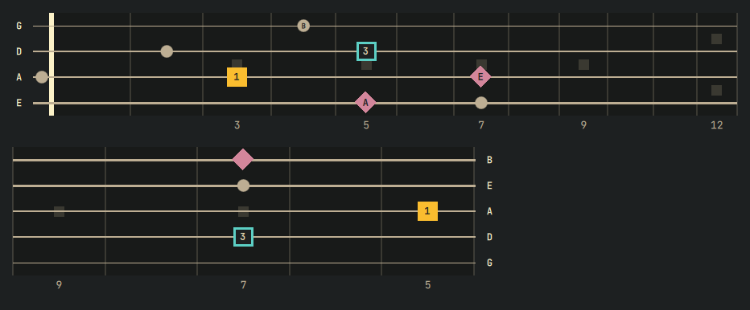
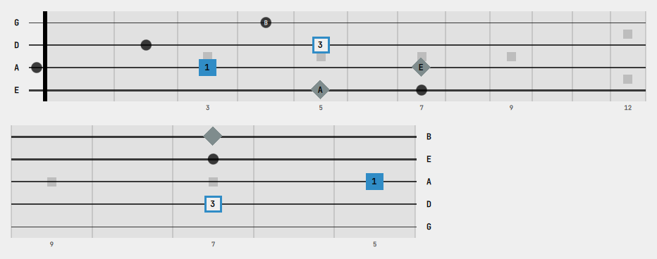
KanteTunerGauge
Flat, in tune (band, check mark, brackets, word), sharp, no tone.
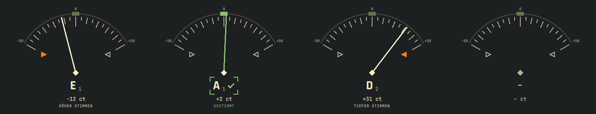
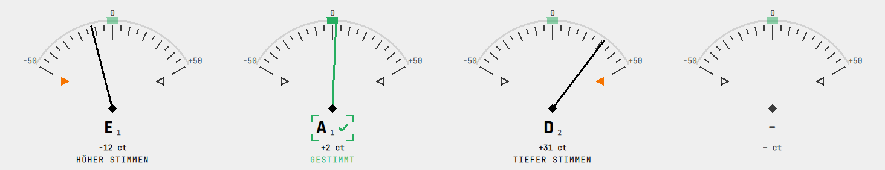
KanteLevelMeter
Too quiet, good, clipped: the zone is named and underlined, the clip box keeps its word.
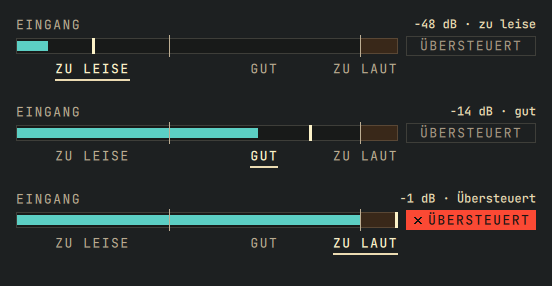
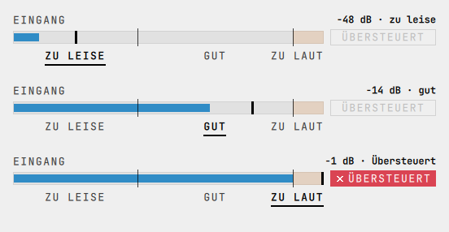
KanteTimingHistogram
Counts on whole steps, bin edges in ms, zero line, dashed mean line, the key early / late.
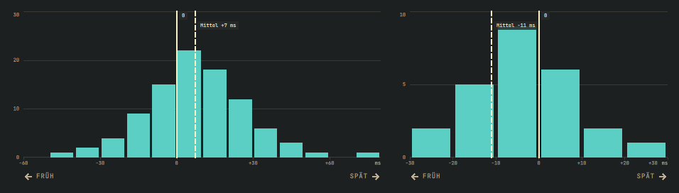
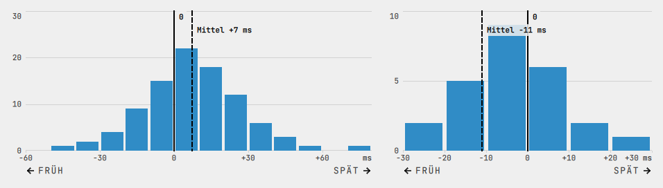
KanteTransportBar
Toggles carry a lamp (filled = on). Narrow: the bar wraps.
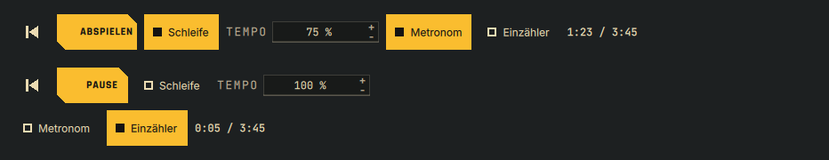
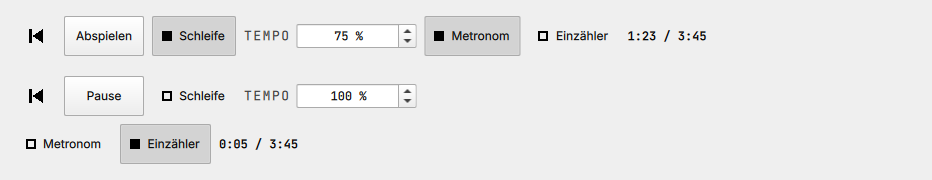
1.24 · marks: Full, Quiet, Off
For a play mode without judgement (Kontra LH-MOD-01). Quiet: notes keep their string or text colour, a small muted sign still tells the state by shape. Off: no states. States can now change one note at a time (setNoteState).
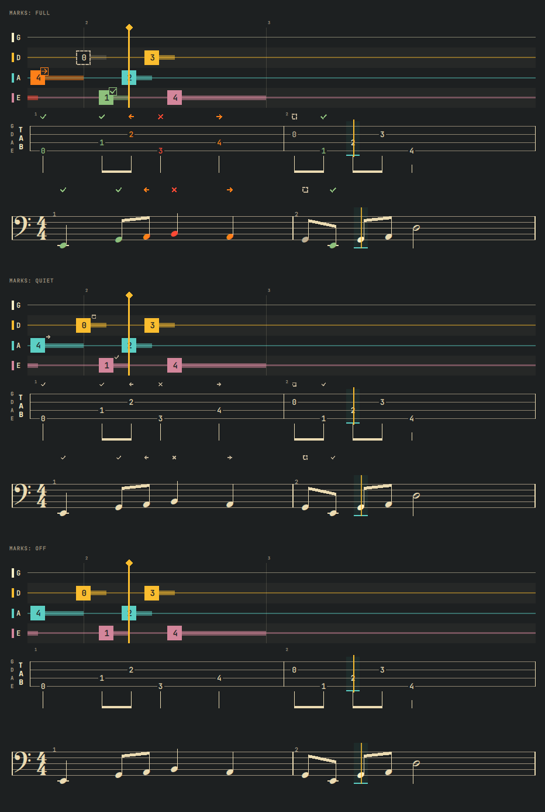
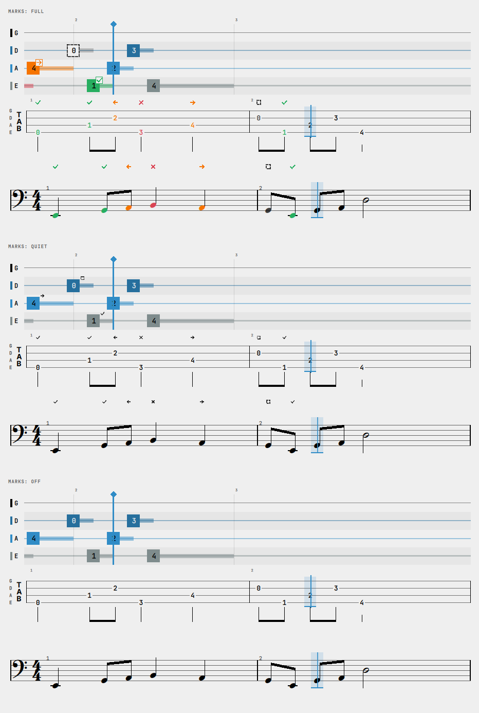
1.24 · KanteSettingRow at doubled font size
The hint is smaller than the title again: KanteStyle.smallFont is never larger than the default font (Kirigami's basic theme reports a larger one).
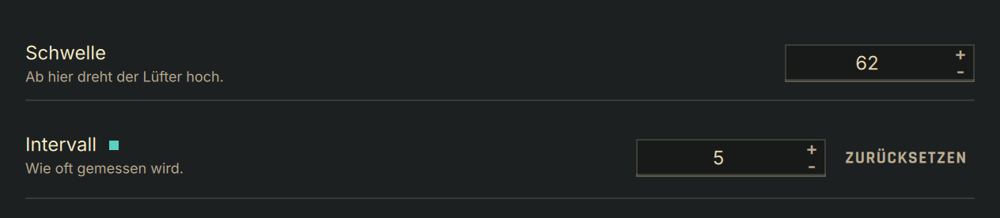
1.27 · controls, primary action, steps
Wishes from Kontra's QA round. KanteSwitch and KanteComboBox: Kante's switch and field skins, and the combo box's open list on a cut card with Kante rows (the row under pointer or keyboard tinted and edged in cyan, the chosen one bold). Kante Light keeps the platform's controls, but draws the primary button: filled in the platform highlight moved to 4.5:1 against its label, cut at two corners, bold. KanteSteps: done a check, current a filled number and a 2 px outline, upcoming a hollow number; the bars differ in height too, so the states never differ by colour alone.
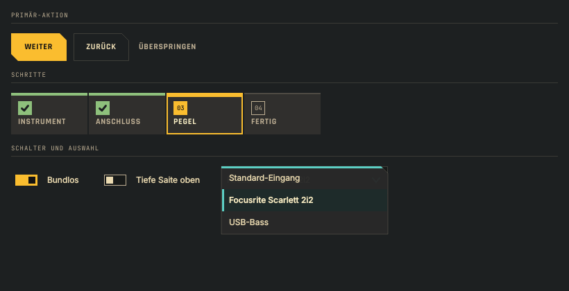
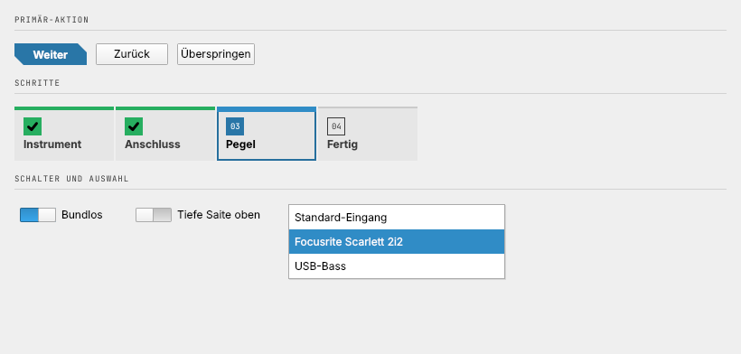
1.27 · note state "offpitch"
The right note, its pitch off by more than the app's cents limit: a wave, in the warning colour of early and late, with the deviation beside it ("+32 ct", "−18 ct") when the app hands it over. Legend, lane, tablature and bass staff.
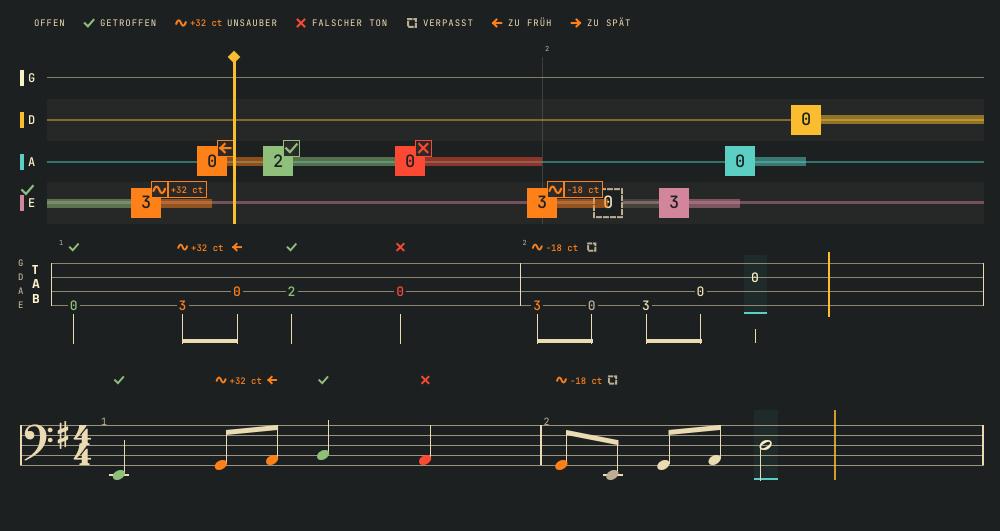
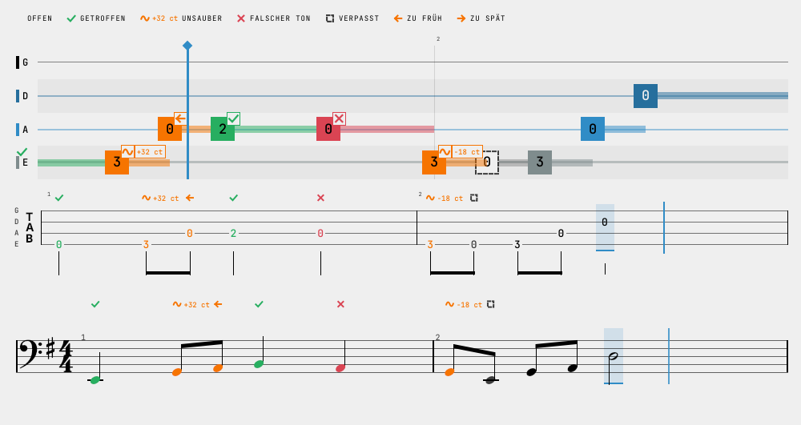
1.27 · chord symbols and key changes
KanteBassStaff: chord symbols per bar and at a time above the staff (♯ and ♭ typeset); a key per bar: G, D, F, C (3/4) and A major in turn with a thin double bar line before each change; naturals stand only alone, when the key returns to C; a change at the start of a line shows in its header. Below: E flat to E major (just four sharps), to D major (just two sharps), then to C (two naturals, alone).
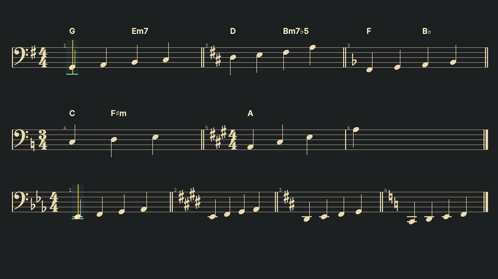
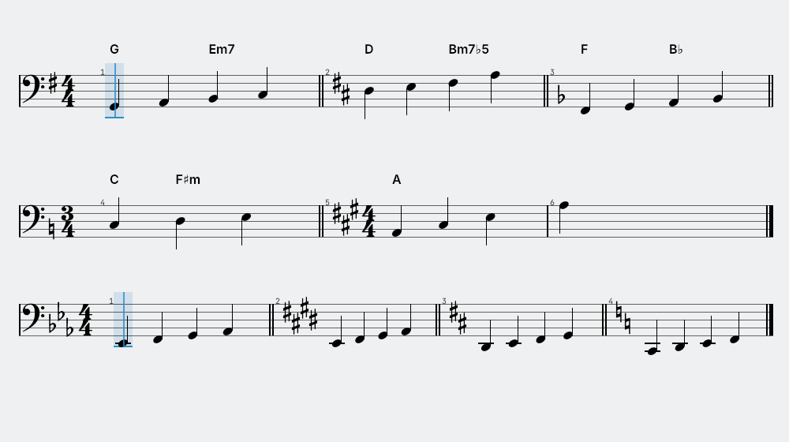
Large fonts
Font DPI doubled (QT_FONT_DPI=192): grid unit and every size follow, nothing is cut off. Halved for this page.
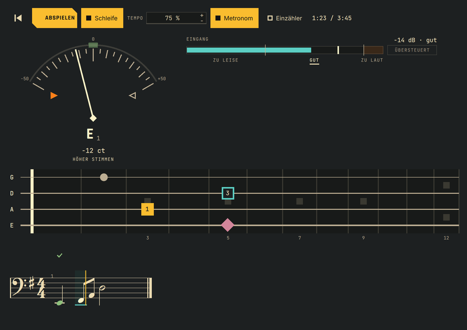